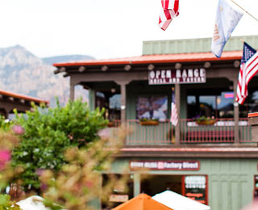
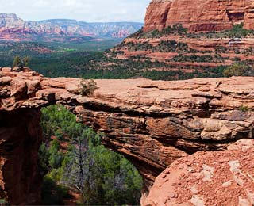

СЕДОНА — небольшой городок в АРИЗОНЕ, зАСЛУЖИвающий большего!
Рассмотрим 5 причин, по которым Седона круче чем гранд каньон!
-
НАСТОЯЩИЙ ГОРОДОК
СЕДОНА НЕ АТРАКЦИОН ДЛЯ ТУРИСТОВ, ТАМ ТЕЧЕТ СВОЯ ЖИЗНЬ
-
Жилье
Рекомендуем пожить в настоящем мотеле, все как в кино!
-
СУВЕНИРЫ
Не только китайского, но и местного производства!
-
Еда
Всегда заказывайте ФИРМЕННЫЙ БУРГЕР, Вы НЕ разочаруетесь!
-
ТАМ ЕСТЬ Мост дьявола
Да, по нему можно пройти! Если конечно вы осмелитесь
-
НЕБОЛЬШАЯ ПЛОЩАДЬ
ВСЕ достопримечательности находятся очень близко
-
КРАСИВАЯ ДОРОГА
ЕХАТЬ В СЕДОНУ ИЗ ЛАС-ВЕГАСА совсем НЕ СКУЧНО!
-
МАЛО ТУРИСТОВ
Большинство едет в гранд каньон и толпится там


ЗАИНТЕРЕСОВАЛИСЬ?
Укажите предполагаемые даты поездки и мы покажем вам лучшие предложения гостиниц в седоне
Найти гостиницу